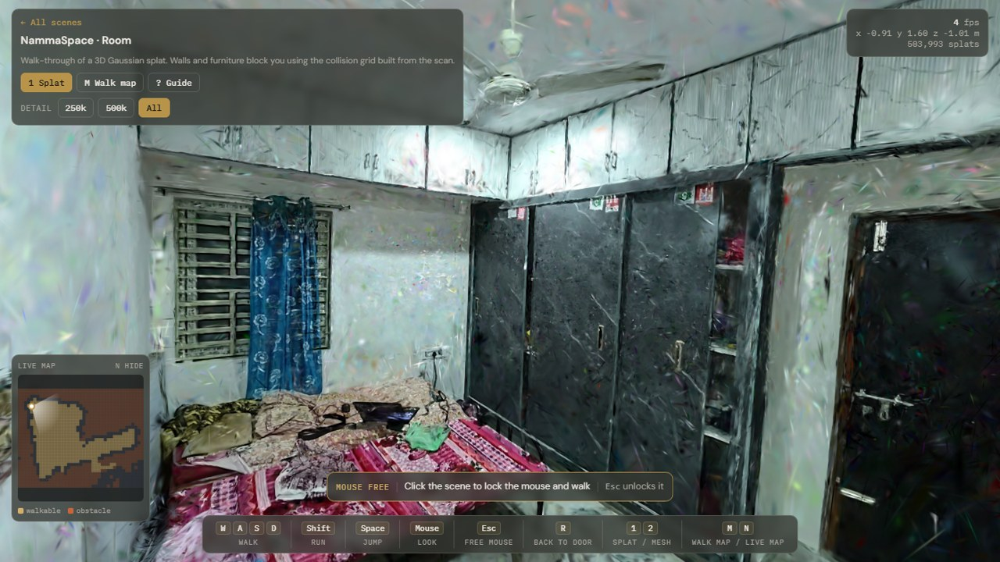
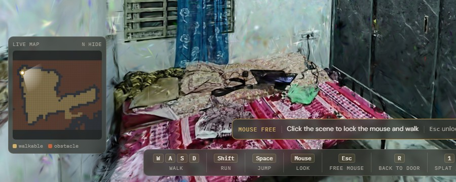
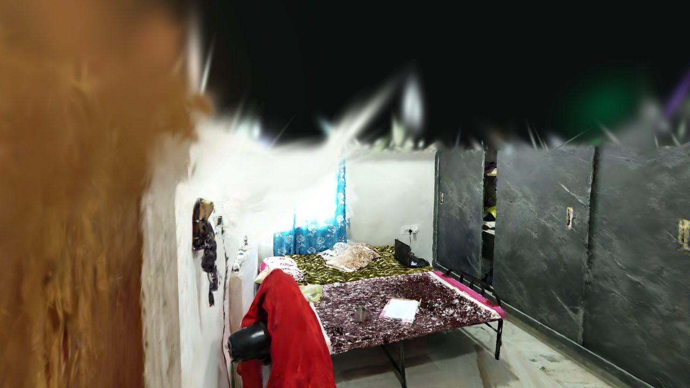
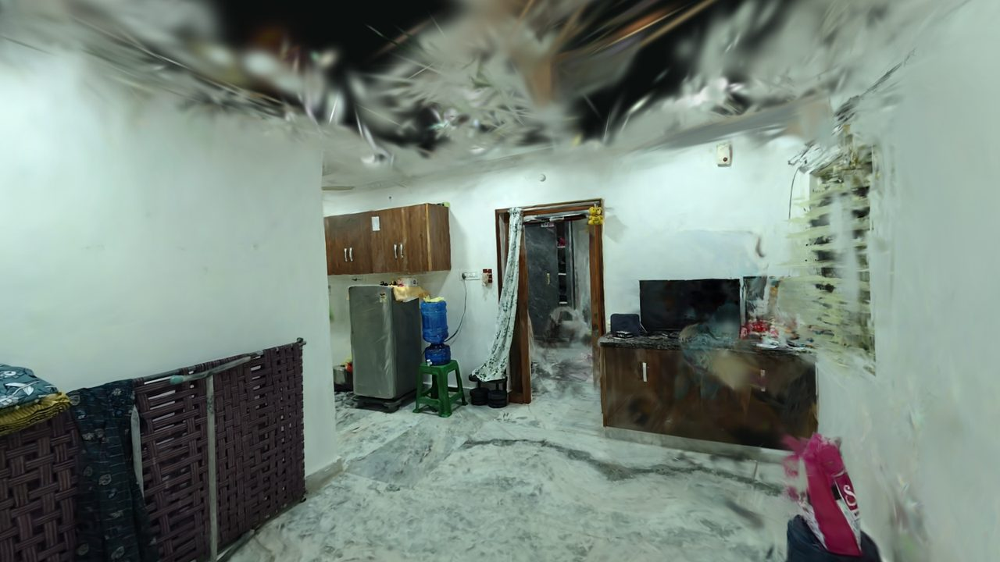

Learned from photos
Every Gaussian is optimised until its renders match the original frames. We hold frames back and score the render against them, so quality is measured rather than claimed.
NammaSpace turns an ordinary phone walkthrough into a photo-real 3D copy of the space that runs in your browser, with collision so walls and furniture stop you. No install, no scanner, no hand modelling.

A normal 3D model is built by an artist or a mesh generator and is lit by guesswork. NammaSpace fits half a million translucent 3D Gaussians directly to the real video frames, so the room keeps its real colour, reflections and soft edges.
Every Gaussian is optimised until its renders match the original frames. We hold frames back and score the render against them, so quality is measured rather than claimed.
The splat draws the room. A separate 10 cm collision grid, built from the splat and the camera path, decides where you can stand. You cannot walk through the bed or the wardrobe.
Each scene is a single 8 to 11 MB file streamed to a plain web page, drawn by our own WebGL2 splat renderer. Open a link and walk.
Four stages, one command each. Plain description on top, what actually runs underneath.
Walk slowly around the room while filming.
Sharpest-frame picker keeps the crispest frame in each half-second window. Blurry frames are dropped.
Work out where the camera was for every frame.
Structure-from-Motion solves each camera pose and a sparse point cloud. Poses are final and never re-run.
Grow a cloud of soft 3D blobs that reproduce the real views.
nerfstudio splatfacto, 30,000 steps, full-size frames, trained on an RTX PRO 6000 Blackwell.
Add floor, walls and furniture collision, then publish.
Floor-aligned and scaled, 10 cm grid with a 25 cm body margin, W A S D controls in a WebGL2 viewer.
Quality is scored on frames the model never saw during training. Figures come from each scene's training report.
| Scene | Frames | Gaussians | PSNR | SSIM | LPIPS | Training | Walkable floor |
|---|---|---|---|---|---|---|---|
| Early bedroom | not recorded | 700,000 shown | – | – | – | – | 8.1 m² |
| Hallway and bedroom | 868 | 650,654 | 26.46 dB | 0.874 | 0.244 | 995 s | 15.8 m² |
| Room | 613 | 541,337 | 27.14 dB | 0.913 | 0.191 | 819 s | 4.3 m² |
PSNR and SSIM: higher is better. LPIPS: lower is better. Scores are measured on frames held out from training. Walkable floor is the area your body centre can reach after the 25 cm margin, so it is smaller than the room. The early bedroom predates our evaluation step, so no held-out figures exist for it.
Bars scale from 0 to 30 dB. Room v1 is a different scene, shown for pipeline progress rather than a like-for-like comparison.


Each scene is one video and one reconstruction. We kept the earlier ones online so you can see what changed.

Experiment 1 · earlyOur first bedroom reconstruction. The ceiling and distant walls are rough, which is the baseline we improved on.

Experiment 2 · longer captureA longer walk from a hallway into a bedroom. The hallway is excellent, the bedroom end is rougher.
Experiment 3 · bestA real bedroom from one phone video with the sharpest-frame picker. Our best quality scene.